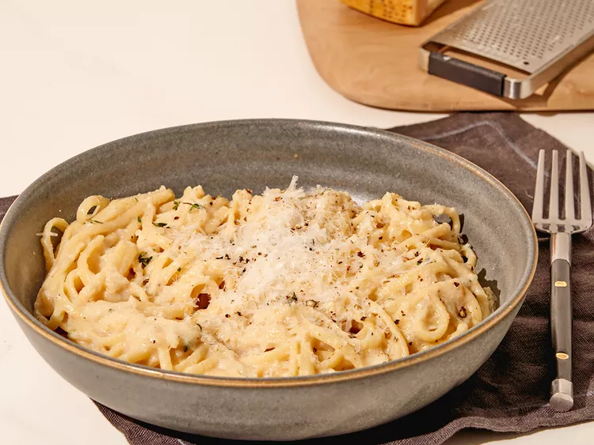

Creamy Caramelized Onion Pasta

Description
This creamy caramelized onion pasta is worthy crying over onions for,
plus, this is the fastest way to caramelize onions.
Ingredients
- 8 ounces your favorite pasta
- 2 onions, sliced vertically
- 2 tablespoons butter
- 3 tablespoons oil
- 1 teaspoon white sugar
- salt and freshly ground black pepper to taste
- 1 tablespoon sherry vinegar
- 1/4 cup water
- 1/2 cup milk
- 1 garlic clove, sliced
- 3 sprigs thyme, leaves only
- 1/4 cup grated Parmesan cheese, or to taste
Steps
-
Fill a large pot with lightly salted water and bring to a rolling boil.
Stir in pasta and return to a boil. Cook pasta uncovered, stirring
occasionally, until tender yet firm to the bite, about 10 minutes, or
according to package directions.
-
Meanwhile, add butter and oil to a deep skillet over high heat. Add
onions, and cook and stir until they take on a little color. Add sugar,
salt, pepper, vinegar, and water, and continue to cook on high heat,
stirring constantly, until onions are very tender and dark brown, about
15 minutes.
-
Turn heat down to low; add milk, garlic, thyme, and grated Parmesan.
Blend the sauce until smooth with an immersion blender.
-
Drain pasta, reserving a small amount of water to thin sauce if needed.
Stir pasta into sauce.